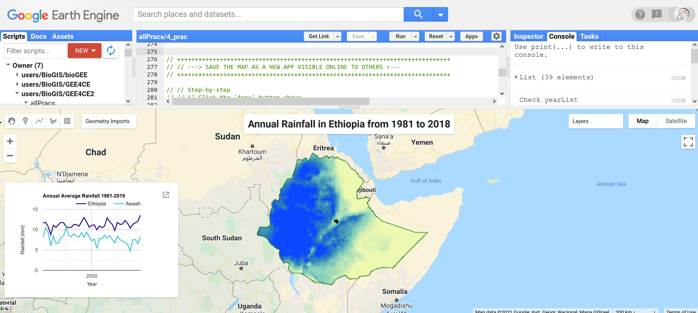
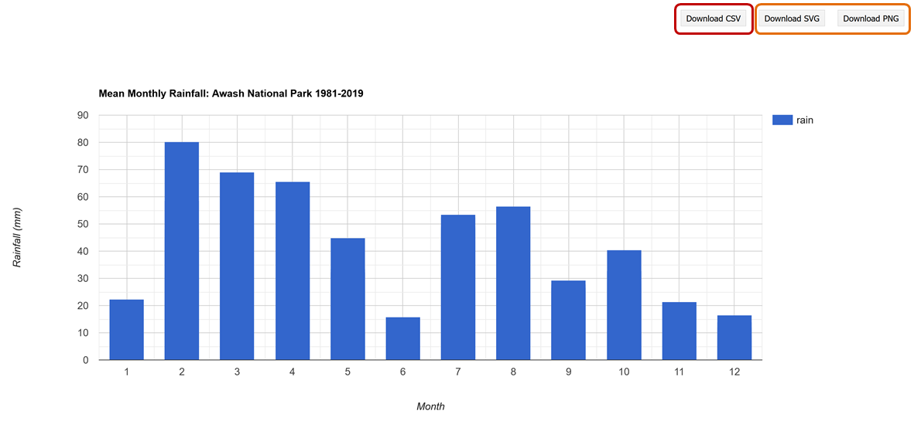

GOOGLE EARTH ENGINE FOR ECOLOGY AND CONSERVATION
Practical 4: Building your first App using long-term patterns of rainfall in Ethiopia and Awash National Park
by Sandra MacFadyen @ https://www0.sun.ac.za/biomath
Access the practical script here.
Learning Objectives
By the end of this practical you should be able to:
- Access long-term rainfall data
- Summarise temporal data by regions
- Display results on a map and in time-series plots
- Make an interactive map (GEE App)
- Compare rainfall and vegetation 'greenness" (i.e. rainfall as a driver of ecosystem processes like vegetation dynamics)
- Output data (csv, rasterStack) for analysis outside of GEE

Introduction
Rainfall plays a central role in a myriad of natural processes, including river health, the transportation of nutrients, soil moisture, vegetation dynamics,
fire regimes, animal movement and distribution patterns and landscape heterogeneity.
Within protected areas these processes function together to safeguard ecosystem integrity. In the face of current climate change predictions,
the spatio-temporal patterns of rainfall is an increasingly important component to include in any ecological study (MacFadyen et al 2018).
Here we explore patterns of monthly rainfall across Ethiopia and the Awash National Park from 1981 to 2019 (39 years).
We'll summarise annual rainfall patterns over different regions using line charts and examine the long-term spatial patterns of rainfall using an interactive map.
Lastly, we'll take a look at how the temporal patterns of annual rainfall compares to those of vegetation vigour or 'greenness',
highlighting its importance as a bottom-up ecosystem driver.
Importing datasets
The datasets we will use for this practical are all available on Google Earth Engine and can be accessed as follows (You can convert these to an import record,
using `convert` from the pop-up message):
var Countries = ee.FeatureCollection('USDOS/LSIB/2017'); var WDPA = ee.FeatureCollection('WCMC/WDPA/current/polygons'); var CHIRPS = ee.ImageCollection('UCSB-CHG/CHIRPS/PENTAD'); var MOD13Q1 = ee.ImageCollection('MODIS/006/MOD13Q1');
The first dataset, LSIB 2017, contains polygon representations of all international boundaries. The second, WDPA, contains polygons of all the world's protected areas. The third, CHIRPS, is a gridded rainfall time series dataset (Funk et al 2015) and the last, MOD13Q1, provides vegetation indexes (NDVI and NDVI) depicting vegetation 'greenness' per 250m pixel.
Filtering data
First define variables for the temporal window of interest, including a start-date and end-date.
We will use these variables later to filter and summarise these long-term data.
// Setup date range var startDate = ee.Date.fromYMD(1981,1,1); var endDate = ee.Date.fromYMD(2019,12,31); // This we'll use later when comparing rainfall and NDVI var startDateX = ee.Date.fromYMD(2000,1,1);
Then filter our polygon features to our areas of interest (AOI), namely Ethiopia and Awash National Park.
var ethiopia = Countries.filter(ee.Filter.eq('COUNTRY_NA', 'Ethiopia')); // Returns info about Ethiopia but can take memory, so limit to first 10 records print('Check Ethiopia Info',ethiopia.limit(10)); // Other usefull print function incl. print('Ethiopia data-type', ethiopia.name()); // Returns object type print('Ethiopia collection size', ethiopia.size()); // Returns collection size // Returns variable's properties print('Ethiopia properties', ethiopia.propertyNames()); // WDPA boundaries filtered to 'Awash' National Park in Ethiopia // Visit https://www.protectedplanet.net to find the correct spelling for names var awash = WDPA.filter(ee.Filter.eq('ORIG_NAME', 'Awash')); print('Awash data-type',awash.name()); Map.centerObject(ethiopia, 8); Map.addLayer(ethiopia, {color: '006600', strokeWidth: 5}, 'Ethiopia', false); Map.addLayer(awash,{color: 'grey'}, 'Awash',true, 0.8); // Add Awash boundary
Now filter the CHIRPS ImageCollection for rainfall (i.e. precipitation) and the MODIS MOD13Q1 product for the Normalized Difference Vegetation Index (NDVI) used in the previous practical. At the same time, filter by date range and clip the collection to your AOI to speed up all analyses that will follow. .
// Lomg-term rainfall from CHIRPS var rainAll = CHIRPS.select('precipitation') .filterDate(startDate, endDate); print('rainAll Info', rainAll.limit(10)); print('rainAll data-type', rainAll.name()); // Check how many images are in the full imageCollection print('rainAll collection size ', rainAll.size()); // To deal with memory issues you can cut your dataset to your AOI // First create a clip function and iterate over each image in the image collection // ** From BONUS section, Prac #1 var clipF = function(image){ return image.clip(ethiopia).rename('rain'); // We use .rename here just because 'precipitation' is too long :) }; // Now run it over the CHIRPS images in the collection var rainClip = rainAll.map(clipF); // Long-term NDVI data from MODIS var ndviAll = MOD13Q1.select('NDVI') .filterDate(startDateX, endDate);
Processing
To plot the long-term patterns of accumulated monthly rainfall across Awash National Park from 1981 to 2019,
reduce the monthly rainfall records by Awash region as follows:
// Set your chart option parameters var opt_chart_mnthRain = { title: 'Mean Monthly Rainfall: Awash National Park 1981-2019', hAxis: {title: 'Month'}, vAxis: {title: 'Rainfall (mm)'}, }; // Create your barchart/histogram var chart_mnthRain = ui.Chart.image.series({ imageCollection: rainClip, region: awash, reducer: ee.Reducer.mean(), scale: 5000, xProperty: 'month' }).setChartType('ColumnChart') .setOptions(opt_chart_mnthRain); // Use the print() command to display your chart in the code editor console print(chart_mnthRain);

To generate a line chart of annual rainfall though, we first need to summarise our dataset before trying to plot it. This will help us avoid a "memory capacity exceeded" error.
// To summarise by year, define a list of years // to summarise over. // Get this directly from the ImageCollection itself var years = ee.List(rainClip.aggregate_array('year')).distinct().sort(); // Or just create a sequence list // var years = ee.List.sequence(1981, 2019); print(years); // Map over the list of years to build a list of annual image composites. var yearList = years.map(function(year) { return rainClip // Filter image collection by year. .filterMetadata('year', 'equals', year) // Reduce image collection by mean. .reduce(ee.Reducer.mean()) // Set composite year as an image property. .set('year', year); .set('yrString',ee.String(year).slice(0,4)); // This is added to help rename bands later }); print('Check yearList', yearList.limit(10)); print('yearList size', yearList.size()); // Convert the image List to an ImageCollection. var rainYears = ee.ImageCollection.fromImages(yearList.flatten()); // print('Check rainYears', rainYears.limit(10)); print('Check rainYears', rainYears.name()); // Now chart your results // First define the chart options var opt_chart_annualRain = { title: 'Annual Rainfall in Ethiopia from 1981-2019', // pointSize: 2, lineWidth: 1, hAxis: {title: 'Year'}, vAxis: {title: 'Rainfall (mm)'}, }; // Then create your line chart var chart_annualRain = ui.Chart.image.series({ imageCollection: rainYears, region: ethiopia, reducer: ee.Reducer.mean(), scale: 5000, xProperty: 'year' }).setOptions(opt_chart_annualRain); // print(chart_annualRain);

You can also calculate the long-term mean rainfall for the whole of Ethiopia as follows:
// Long-term mean rainfall of Ethiopia var rainAnnual = rainClip.mean(); // var rainAnnual = rainAll.mean().clip(ethiopia); // Would also work // print('Check Long-term mean', rainAnnual); // Use print() to check your results
Visualisation
Now let's plot these results on a map. First define centre the map to Ethiopia.
Then add Ehtiopia's boundary, the long-term mean annual rainfall for Ethiopia and finally the boundary for Awash National Park.
// Centre your map Map.centerObject(ethiopia, 4.5); // Add Ethiopia but make the border quite thick so it looks like only an outline Map.addLayer(ethiopia, {color: '006600', strokeWidth: 5}, 'Ethiopian Boundary'); // Add the mean rainfall and use the legend parameters // stored as the import entry, "ltVis" Map.addLayer(rainAnnual, ltVis, 'Long-term Annual Rainfall'); // Lastly, add Awash's boundary Map.addLayer(awash,{color: 'black'}, 'Awash National Park',true, 1);

More Charting Options
We can also summarise these annual rainfall results by different regions i.e. Awash National Park and Ethiopia.
To do this, first create a new featureCollection and then define the chart parameters (e.g. title and axis labels) and plot a line chart
using a secondary y-axis.
// Create a new feature collection with both Ethiopia and Awash boundaries var myRegions = ee.FeatureCollection([ //NB! the .geometry() function convert ours features to geometry variables ee.Feature(ethiopia.geometry(), {'place': 'Ethiopia'}), ee.Feature(awash.geometry(), {'place': 'Awash'}) ]); print('Check myRegions', myRegions); // Set your chart options var opt_chart_regions = { title: 'Annual Average Rainfall 1981-2019', hAxis: {title: 'Year', format: '####'}, vAxis: {title: 'Rainfall (mm)'}, lineWidth: 2, colors: ['31159a', '4ecbd4'], // Include 2 colours, 1 for each line }; // Now define the chart and print it to the console. var chart_regions = ui.Chart.image.seriesByRegion({ imageCollection: rainYears, // band: 'rain_mean', regions: myRegions, // This is your new FeatureCollection reducer: ee.Reducer.mean(), scale: 5000, seriesProperty: 'place', // This is your grouping field xProperty: 'year' // And the x-axis is your year property }).setOptions(opt_chart_regions); // print(chart_regions);

Now instead of using print() to see this chart in the GEE console, we'll instead add it to the map layout. To do this, first make sure the print() function above is commented out. Then we will start adding the different elements to our map:
Adding additional elements to your map
Before making our App we need to add more information to our map, like a title or summary chart.
// Create a map title var title = ui.Label('Annual Rainfall in Ethiopia from 1981 to 2018', { stretch: 'horizontal', textAlign: 'center', fontWeight: 'bold', fontSize: '20px' }); // Add this title to the map Map.add(title); // Create a panel to hold the chart in the map instead of "Console" // NB! You must turn off print(chart); above for this to work var panel = ui.Panel(); panel.style().set({ width: '350px', position: 'bottom-left' }); // Add this empty chart panel to the map Map.add(panel); // Fill the panel with the chart panel.add(chart_regions);
Save your map online
Now for the fun part! We can share this map with the world by creating a GEE Application (App).
To do this, follow the steps below:
- Click the
Appsbutton above - Select
NEW APP - Give the App a Name and click
PUBLISH. Leave everything else default - Your new URL will appear - Click this to see your first online interactive map (if you get an error message, follow the steps below instead).
- If you see a
Not readypage, give it a few minutes and try again

If you get an error message, chances are you haven't accepted the terms and conditions of using GEE Apps in your Google Cloud Platform. To do so, follow these steps instead of the ones above.
- Click the Apps button above
- Select NEW APP
- Give the App a Name and click PUBLISH
- When the error appears, click the Cloud Terms of Service link
- This will open the Cloud Platform Console (if not open it here)
- Go down to App Engine and select Dashboard
- You'll be asked to agree to the Terms of Service, AGREE AND CONTINUE
- Close your Cloud Platform Console and go back to GEE and click NEW APP again
- Give the App a Name and click PUBLISH. Leave everything else default
- Your new URL will appear - Click this to see your first online interactive map
- If you see a Not ready page, give it a few minutes or refresh the page and try again

Relationship between annual rainfall and vegetation 'greenness'
Taking things even further, we could also combine the calculation of annual mean rainfall with annual mean NDVI for Ethiopia
for the same period, 2000 to 2019, to see whether there's a relationship between the two.
What do you think we'll see?
// Clip NDVI to ethiopia and add a 'Year" property to the result var ndviClip = ndviAll.map(function(img){ var date = ee.Date(img.get('system:time_start')).format('YYYY'); return img.set('year',ee.String(ee.Number.parse(date))); }); print('Check ndviClip: ', ndviClip); print('Check ndviClip: ', ndviClip.first().propertyNames()); var yearsX = ee.List(ndviClip.aggregate_array('year')).distinct().sort(); // var yearsX = ee.List.sequence(2000, 2019); // Or just make a sequence print('Check yearsX',yearsX);
Now calculate the annual mean for each year for both Rainfall and NDVI imageCollections.
// Calculate annual mean for every year for both Rainfall and NDVI imageCollections var annualRainNDVI_list = yearsX.map(function(y){ var rainYear = rainClip.filter(ee.Filter.calendarRange(y,y,'year')) .mean().rename('rain'); var ndviYear = ndviClip.filter(ee.Filter.calendarRange(y,y,'year')) .mean().multiply(0.0001).rename('ndvi'); // .multiply(0.0001) scale by constant the constant refered to in the metadata return ndviYear.addBands(rainYear).set('year', y); }); // print('Check annualRainNDVI_list', annualRainNDVI_list); print('Check annualRainNDVI_list', annualRainNDVI_list.name()); // Convert the image List to an ImageCollection. var annualRainNDVI = ee.ImageCollection.fromImages(annualRainNDVI_list.flatten()); // print('Check annualRainNDVI', annualRainNDVI);
Then create a comparative line chart of both summaries. Remember to first define the chart parameters and then create the line chart with two y-axes as follows:
// Display a comparative line chart of rainfall and NDVI for Ethiopia // Set chart parameters e.g. title var opt_chart_RainNDVI = { title: "Annual Max Rainfall vs. 'Greenness (NDVI) for Ethiopia", pointSize: 3, legend: {maxLines: 5, position: 'top'}, series: { 0: {targetAxisIndex: 0, color: 'green', lineWidth: 1, pointSize: 2}, 1: {targetAxisIndex: 1, color: 'blue', lineWidth: 1, pointSize: 2}}, vAxes: {// Adds titles to each axis. 0: {title: 'Mean NDVI (*0.0001)'}, 1: {title: 'Mean Rainfall (mm)'}},}; // Build the chart and plot it var chart_RainNDVI = ui.Chart.image.series({ imageCollection: annualRainNDVI.select(['ndvi','rain']), region: ethiopia, reducer: ee.Reducer.mean(), scale: 5000, xProperty: 'year' }).setOptions(opt_chart_RainNDVI); // print(chart_RainNDVI);
Correlation between annual rainfall and vegetation 'greenness'
We could also directly check the correlation between the two variables as follows:
// Compute a Pearson's product-moment correlation coefficient // and the 2-sided p-value test for correlation = 0. var opt_correl = { title: "Correlation between Rainfall and NDVI for Awash", pointSize: 2, legend: {maxLines: 5, position: 'top'}, series: { 0: {targetAxisIndex: 0}, 1: {targetAxisIndex: 1}}, vAxes: {// Adds titles to each axis. 0: {title: 'Correlation - R2)'}, 1: {title: 'P-Value'}},}; // Build the chart and plot it var correl_chart = ui.Chart.image.series({ imageCollection: annualRainNDVI.select(['NDVI', 'rain']), region:aoi_clip, reducer: ee.Reducer.pearsonsCorrelation(), scale: 5000, xProperty: 'year' }).setOptions(opt_correl); print(correl_chart); // Display a comparative line chart of rainfall and NDVI for Ethiopia // Set chart parameters e.g. title var opt_chart_RainNDVI = { title: "Annual Max Rainfall vs. 'Greenness (NDVI) for Ethiopia", pointSize: 3, legend: {maxLines: 5, position: 'top'}, series: { 0: {targetAxisIndex: 0, color: 'green', lineWidth: 1, pointSize: 2}, 1: {targetAxisIndex: 1, color: 'blue', lineWidth: 1, pointSize: 2}}, vAxes: {// Adds titles to each axis. 0: {title: 'Mean NDVI (*0.0001)'}, 1: {title: 'Mean Rainfall (mm)'}},}; // Build the chart and plot it var chart_RainNDVI = ui.Chart.image.series({ imageCollection: annualRainNDVI.select(['ndvi','rain']), region: ethiopia, reducer: ee.Reducer.mean(), scale: 5000, xProperty: 'year' }).setOptions(opt_chart_RainNDVI); // print(chart_RainNDVI);

Data Export
To export the data shown in the created charts, you can simply maximise the chart and then click Download to
export to formats .CSV, .SVG or .PNG.

You can also script the export. This option will allow you to customise formats for your exported table. For example, a formatted date field using a reducer to get the mean rainfall value for Awash for each year. The exported csv table will then contain a column for both date and mean annual rainfall. Once the task is completed, you will find this csv file in your google drive.
var csv_annualRain = rainYears.map(function(img){ var year = img.get('year'); var mean = img.reduceRegion({ reducer: ee.Reducer.mean(), geometry: awash, scale: 5000 }); return ee.Feature(null, {'mean': mean.get('rain_mean'),'year': year}); }); print('Check csv_annualRain', csv_annualRain); // Export a .csv table of year and mean rainfall Export.table.toDrive({ collection: csv_annualRain, description: 'annualRain', folder: 'GEE4CE', fileFormat: 'CSV' });
Or you can create a rasterStack and export that to your GDrive as follows:
// Get the band names from the ImageCollection images var bandNames = ee.List(rainYears.aggregate_array('yrString')); print('Check bandNames',bandNames); // Apply the function toBands() on the image collection // to stack all bands into one image // And .rename() to rename the new "rasterStack" layers var rainYearsStack = rainYears.toBands().rename(bandNames); // Export aa cloud-optimized GeoTIFF. // i.e. rasterStack with 39 layers, representing annual rainfall from 1981 to 2019 Export.image.toDrive({ image: rainYearsStack, folder: 'GEE4CE', description: 'Rainfall_Sums', scale: 5000, region: awash, fileFormat: 'GeoTIFF', formatOptions: { cloudOptimized: true } });
Sharing your code to complete the practical assignments
In the previous practical assignments, you shared your scripts with us using the "Get Link" button below to copy/paste
your script link into an email to us at ots.online.education@gmail.com.
your scripts.

In this assignment you will also need to share the URL of your new App with us. Get the URL link by clicking on Apps and then under the ID (click to update app) get the link directly from the App details page, or just open the App under App Name (click to launch) and copy/paste the URL into an email to us.

Practical Assignment #4
// To complete the practical exercise below share // your scripts and App URL with us, as described above // !NB! Remember to add the prac number in the header // Also see https://biomath-lab.github.io/OTS-GEE/pages/4_prac.html for more help // ----------------------------------------------------------- // Generate your own App using rainfall or any other climate variable* // to describe how values differ from one region to the next // [HINT: Lines 213 to 288] // * Don't forget CHIRPS is only available for the Southern Hemisphere // Check the coverage of the dataset with var chirps = ee.ImageCollection("UCSB-CHG/CHIRPS/PENTAD") .filter(ee.Filter.date('2020-01-01', '2021-02-01')) .select('precipitation'); var rainVis = {min: 0.0, max: 112.0, palette: ['001137', '0aab1e', 'e7eb05', 'ff4a2d', 'e90000'],}; Map.setCenter(24.24, -0.08, 2.5); Map.addLayer(chirps, rainVis,'Chirps Extent'); // Go crazy! I cant wait to see what you come up with :)